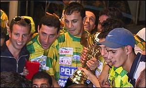

🏆 Champions' celebrations
🏆 Algerian League: 14 titles
(1973, 1974, 1977, 1980, 1982, 1983, 1985, 1986, 1989, 1990, 1994, 1995, 2006, 2008)
🌍 CAF Champions League: 2 titles (1981, 1990) – Runner-up 2000
🏅 CAF Cup: 3 titles (2000, 2001, 2002)
🇩🇿 Algerian Cup: 5 titles (1977, 1986, 1992, 1994, 2011)
🏆 African Super Cup: 1 title (1995)
🏆 Algerian Super Cup: 2 titles (1973, 1992)
🇩🇿 League Cup: 1 title (2021)
Interactive Trophy Counter
Click the buttons to count JSK titles!
28
JSK has 28 titles in total (14 league titles, 14 others)
Back to home